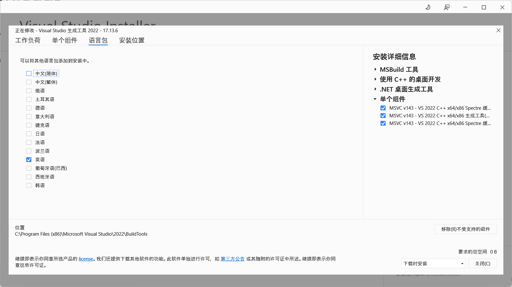

解决 VSCode + CMake + MSVC 编译器信息乱码的问题
在 VSCode 中使用 CMake Tools 插件开发 C++ 时，如果选用 MSVC 编译器，可能会遇到编译信息乱码的问题：
warning C4267: 鈥滃弬鏁扳€�: 浠庘€渟ize_t鈥濊浆鎹㈠埌鈥淒WORD鈥濓紝鍙�鑳戒涪澶辨暟鎹�
乱码的产生通常是由于文本的创建者和解析者之间存在编码差异。在本例中，MSVC 的编译器 cl.exe 以 UTF-8 编码输出中文信息，却被 CMake Tools 以错误的 GBK 编码解析，进而导致乱码。
基于此原理，有两个解决的方向：
- 修复二者的编码差异
- 让
cl.exe使用英文输出
以下给出四种解决方案，推荐程度由高到低排序。
方案一：让 CMake Tools 插件以 UTF-8 解析信息
在 VSCode 设置中修改 cmake.outputLogEncoding 为 utf-8。此方法提出于 相关 Issue。
方案二：让 cl.exe 输出英文
增加一个新的全局环境变量 VSLANG=1033，禁用 MSVC 的本地化出书。其中 1033 是英语的语言代码，语言代码的列表详见 vcpkg-tools/docs/localization.md。
方案三：删除 MSVC 的本地化语言包
请谨慎使用本方法，确保明白其可能的后果。
如果当初 MSVC 的安装程序 还没删，可以再次打开它，反选其中的中文语言包，卸载。

如果安装包已经找不到了，可以用以下 PowerShell 命令手动删除：
cd "C:\Program Files (x86)\Microsoft Visual Studio\"
Get-ChildItem -Recurse -Force -Directory -Filter '2052' | ForEach-Object {
$newName = "$($_.Parent.FullName)\2052_"
Rename-Item -Path $_.FullName -NewName $newName
}
方案四：更改系统全局代码页（不推荐）
请谨慎使用本方法。该方法可能使一些老旧程序乱码。
如 这个问答 所述，可通过修改系统代码页为 65001 (UTF-8) 彻底解决问题。具体操作是：控制面板 -> 时钟和区域 -> 区域 -> 管理 -> 更改系统区域设置 -> 勾选“Beta 版：使用 Unicode UTF-8 提供全球语言支持”。
需要注意的是，一些编写方式不正确的老旧程序可能会无视系统代码页的变化，从而乱码。该方法应作为最后手段使用。
作者：hsfzxjy
链接：
许可：CC BY-NC-ND 4.0.
著作权归作者所有。本文不允许被用作商业用途，非商业转载请注明出处。

OOPS!
A comment box should be right here...But it was gone due to network issues :-(If you want to leave comments, make sure you have access to disqus.com.